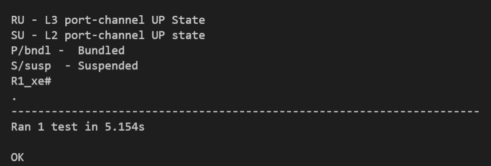

Write an API
Important
Before beginning development of a new API, be sure to raise an issue on GitHub letting the community know which API you will be creating. This allows us to avoid duplicate API development.
Note
All APIs are contained within genielibs/src/sdk/apis. This is where any new APIs should be added.
APIs are the functional tools of Genie. They are designed to do one task and one task only, and should be as simple as possible. When making an API ask yourself: what will this API do? Configure a service? Get some information? Verify a configuration has been set correctly? Whatever you decide, the API should only do a single task. This is by design, and helps to make APIs reusable. When building APIs, the goal is to have many small APIs that perform individual tasks rather than one single, large API that performs all necessary tasks.
In these examples, we will be creating 3 types of APIs: one for configuring a device, one for getting information from a device, and one for verifying <something> on a device.
These APIs will be placed in these files:
genielibs/src/sdk/apis/iosxe/interface/configure.py
genielibs/src/sdk/apis/iosxe/interface/get.py
genielibs/src/sdk/apis/iosxe/interface/verify.py
Configure
Configure APIs connect to the given device and execute commands to perform a task.
from unicon.core.errors import SubCommandFailure
def shut_interface(device, interface):
""" Shut interface
Args:
device (`obj`): Device object
interface (`str`): Interface name
Returns:
None
Raises:
SubCommandFailure
"""
In this case, we want to create a configure API that will shutdown a given interface. To start we import SubCommandFailure to be used later, then define the function shut_interface. device is a required argument for all APIs, but since we also want to pass in an interface to shutdown, we include that as a parameter as well.
A docstring detailing what the API does, its arguments, its return value, and what exceptions it might raise is required. This will be used to populate the public API documenation.
from unicon.core.errors import SubCommandFailure
def shut_interface(device, interface):
""" Shut interface
Args:
device (`obj`): Device object
interface (`str`): Interface name
Returns:
None
Raises:
SubCommandFailure
"""
try:
device.configure([
"interface {}".format(interface),
"shutdown"
])
except SubCommandFailure:
raise SubCommandFailure(
"Could not shut down interface {}".format(interface)
)
Here we have tried to run the commands interface <interface> and shutdown on the device’s configuration dialog. If this succeeds, no error will be thrown and our script will continue on. If it fails, a SubCommandFailure exception will be thrown for us to catch in our script.
Get
Get APIs retrieve information and return them to our scripts.
from genie.metaparser.util.exceptions import SchemaEmptyParserError
def get_interface_names(device):
"""Gets the names of all interfaces on the device
Args:
device (obj): Device object
Returns:
list: List of interface names
"""
Here we are importing SchemaEmptyParserError for later use, and defining our API. Again, each API is required to have a docstring detailing what is does, its arguments, and its return values. Note that device is a mandatory parameter for all APIs.
from genie.metaparser.util.exceptions import SchemaEmptyParserError
def get_interface_names(device):
"""Gets the names of all interfaces on the device
Args:
device (obj): Device object
Returns:
list: List of interface names
"""
try:
out = device.parse('show interface')
except SchemaEmptyParserError:
return None
With this we are calling the existing parser for show interface and getting the parsed output. If the output is empty, it will raise a SchemaEmptyParserError which we can catch and then return None back to our scripts.
from genie.metaparser.util.exceptions import SchemaEmptyParserError
def get_interface_names(device):
"""Gets the names of all interfaces on the device
Args:
device (obj): Device object
Returns:
list: List of interface names
"""
try:
out = device.parse('show interface')
except SchemaEmptyParserError:
return None
return [name for name in out.keys()]
Since the output of our parser gives us a dictionary with the interface names as the keys, we can use list comprehension to quickly gather the names and return them back.
Verify
Verification APIs are designed to verify that a configuration has been set correctly. They don’t have a return value, and only communicate with the device to retrieve data.
from genie.utils.timeout import Timeout
def verify_interface_state_down(
device, interface, max_time=60, check_interval=10
):
"""Verify interface state is down and and line protocol is down
Args:
device (`obj`): Device object
interface (`str`): Interface name
max_time (`int`): max time
check_interval (`int`): check interval
Returns:
result(`bool`): True if is up else False
"""
We start the verification API by importing Timeout. This is a necessary tool used to loop a section of code until it either confirms what we want it to, or times out. Aside from that, we’re again creating the API function with the mandatory device argument, the interface argument we need for this specific API, and two parameters that are mandatory for the verify APIs, max_time and check_interval, which must be set with default values. Again, the docstring is required.
from genie.utils.timeout import Timeout
def verify_interface_state_down(
device, interface, max_time=60, check_interval=10
):
"""Verify interface state is down and and line protocol is down
Args:
device (`obj`): Device object
interface (`str`): Interface name
max_time (`int`): max time
check_interval (`int`): check interval
Returns:
result(`bool`): True if is up else False
"""
timeout = Timeout(max_time, check_interval)
while timeout.iterate():
...
Here we are creating and starting our timeout. If max_time and check_interval are not passed when calling this API, it will default to a 60 second run, checking in 10 second intervals. This results in a total of six attempts.
from genie.utils.timeout import Timeout
def verify_interface_state_down(
device, interface, max_time=60, check_interval=10
):
"""Verify interface state is down and and line protocol is down
Args:
device (`obj`): Device object
interface (`str`): Interface name
max_time (`int`): max time
check_interval (`int`): check interval
Returns:
result(`bool`): True if is up else False
"""
timeout = Timeout(max_time, check_interval)
while timeout.iterate():
out = device.parse("show interfaces {}".format(interface))
oper_status = out[interface]["oper_status"]
line_protocol = out[interface]["line_protocol"]
enabled = out[interface]["enabled"]
if oper_status == line_protocol == "down" and enabled == True:
return True
timeout.sleep()
return False
Let’s break down what is happening here. Each time the loop runs, it:
Gets the parsed output of
show interface <interface>Gets the
oper_statusandline_protocolof our desiredinterfaceGets the
enabledstatus of our desiredinterfaceChecks to see if
oper_statusandline_protocolaredown, andenabledisTrue
If all conditions are met, it will return
True, breaking out of the loop and ending the API.If all conditions are not met, the Timeout will sleep for
check_intervalseconds and then loop again.If the loop times out, the API will return
False.
This boolean response will allow us to go forward or stop in our main testscript.
Once your parser or API is merged into its respective repository, it will be available for production use in the next official release.
Unit Testing
To make sure that your newly developed API works correctly and that future changes will not accidentally change its expected behavior, it is necessary to develop unit tests. Consequently, the code is protected and makes it possible to perform automated checks on the API.
In order to facilitate this process, a script was developed that allows generating unit tests for an API or an API module in a simplified way.
This script is called api_unittest_generator.py and can be found in src/genie/libs/sdk/apis/.
Note
The API Unit Test Generator relies on Unicon playback to generate unit tests, so it does not work with other connection types. For the same reason, it does not work with ha devices, as only one device connection can be recorded at a time.
To generate unit tests, the script needs to be able to connect to a device, and because of that, can generate unit tests for one OS at a time. The following arguments can be passed to the script:
--testbed-file - path to the testbed file
--device - name of the device the script should connect to
--test-arguments - string containing comma-separated key-value pairs (e.g. interface: GigabitEthernet1, delay_type: down)
--test-arguments-yaml - YAML file containing test arguments
--module - the name of the module (e.g. interface.get, vrf.get) [1]
--module-path - a full path to a genielibs API file (e.g. ~/dev/my_env/genie/genielibs/pkgs/sdk-pkg/src/genie/libs/sdk/apis/iosxe/interface/get.py)
--api (optional) - the name of the API (if no API is specified, the script will try to generate tests for all APIs in the module)
--destination (optional) - folder where tests will be created (default value is current working directory)
Below is an example of a valid command that will generate unit tests for all APIs in the module interface.get on a nxos device:
python api_unittest_generator.py --module interface.get --testbed-file devices.yaml --device R3_nx --test-arguments-yaml R3_interface_get.yaml
The API Unit Test Generator detects the OS based on the device and generates unit tests only for this OS. If you wish to generate unit tests for other OSs, you may have to create different test argument YAML files, as test arguments may vary.
Since different APIs may need different arguments, the test generator is able to interpret a YAML file containing the arguments needed to execute the APIs. Building this file is simple, but there are a few rules that must be followed. There are 2 levels of arguments that can be created:
default arguments are available to all APIs and only need to be declared once. They must be declared under default and arguments in the YAML file. Below you can see how the default argument interface can be declared.
default:
arguments:
interface: GigabitEthernet1
API specific arguments must be declared under a key with the same name as the API and arguments. If an argument with the same name was already declared in default, the API will only considered the value declared in this item, but the default value will work for the other APIs.
default:
arguments:
interface: GigabitEthernet1
is_interface_changed_state_log:
arguments:
interface: Tunnel2
verify_interface_bundled_interfaces_mode:
arguments:
interfaces:
- Gi6
In the example above, interface is changed to Tunnel2 only for the API is_interface_changed_state_log. Moreover, verify_interface_bundled_interfaces_mode has an argument that is exclusive to that API.
Ocasionally, it may be necessary to create more than one unit test per API, in order to increase code coverage. For these cases, you can declare a list of test arguments for the API, like the following:
get_interface_carrier_delay:
arguments:
- delay_type: up
- delay_type: down
Each list of arguments represents a separate test and each test would also have access to default arguments, if they are specified.
You can verify if the device will return a specific output. To do this, you can add expected_output as an argument to the test list and the Test Generator will compare the results. If the API return does not match the expected output, the unit test will not be generated. Below is an example of how to use this feature. The expected output in this case is None:
get_interface_carrier_delay:
arguments:
- delay_type: up
expected_output: null
- delay_type: down
If you wish to create unit tests for some APIs in a module, but not all of them, you can declare a list containing the names of all the APIs you want to ignore and place them under exclude.
The item would look like this:
exclude:
- question_mark_retrieve
- int_to_mask
default:
arguments:
...
In this scenario, unit tests for question_mark_retrieve and int_to_mask would not be generated.
A regex can be used to filter out APIs, instead of a list.
To do that, you need to add the keyword ‘regex’ to exclude, followed by a pattern.
In the example below, all APIs with the prefix get_ would be filtered out.
exclude:
regex: get_
A comprehensive example of all features previously introduced can be seen below:
exclude:
- question_mark_retrieve
default:
arguments:
interface: GigabitEthernet1
interface_list:
- GigabitEthernet1
ip_address: 172.16.1.139
vrf: VRF1
get_interface_carrier_delay:
arguments:
- delay_type: up
- delay_type: down
If you wish to create a test for a single API and you do not want to create a YAML file because as you only need to pass a few arguments to the API, you can use --test-arguments instead.
This argument accepts a string containing comma-separated key-value pairs. Each key-value pair is separated by a colon.
In this case, you can pass the argument like this (as part of the command):
python api_unittest_generator.py --test-arguments interface:GigabitEthernet1,vrf:VRF1 ...
Note that for this type of declaration, you do not have to declare default, arguments or a specific API name as part of the string.
All arguments will be considered default arguments and their data types will be string.
At the end of its run, the API Unit Test Generator creates a folder structure according to the API/module structure.
For example, for the API get_bundled_interface of the interface.get module on iosxe, it would create the following folder structure:
Each API test folder created by this script will contain:
A mock_data folder, containing the mocked data recorded when the test was generated.
A test script (test_api_<api name>.py) that contains all tests declared for the API.
To run the generated tests, you just need to navigate to the test directory and run the following command:
python -m unittest
If everything is working properly, the test script will be executed and you will see how many tests were ran, followed by an OK.
Footnotes